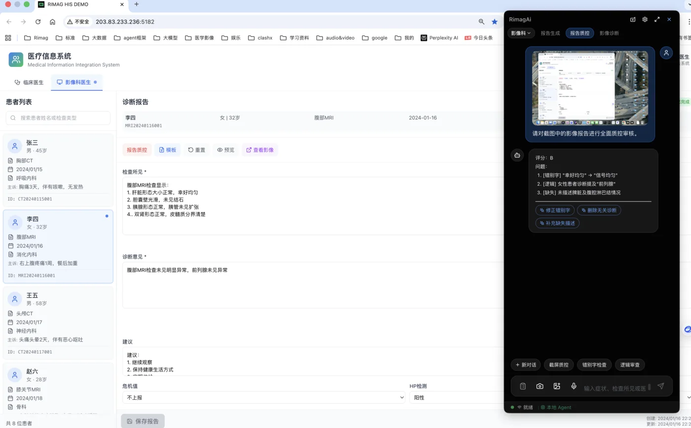
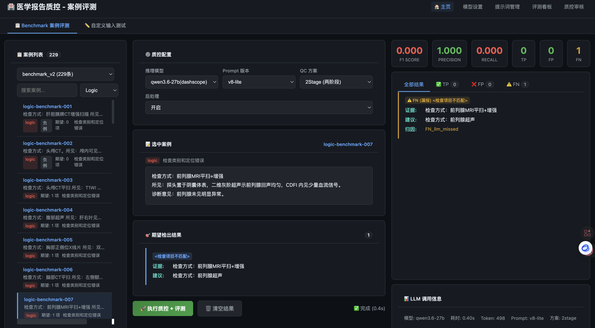

🎙️ 智能语音报告生成
彻底解放双手。通过高度优化的声学模型和医学专属语料库，即便在嘈杂的阅片室环境和极速口播下，也能实现所说即所见。
医学专有名词增强
集成自研基于 FunASR 优化的本地化识别引擎。对罕见病、放射学特殊解剖结构、分级标准等术语进行权重提升。
在线/离线双模切换
断网环境或医院内外网严格隔离区域，依然能够提供毫秒级响应的端侧本地流式语音转文本识别服务。
MCOS 映射环节
L1 感知层 (捕捉) + L4 执行层 (填单)
🛡️ 智能双重防呆质控
医疗报告容错率为零。我们首创了“毫秒级规则兜底 + 大模型深度语义推理”的双规并行架构，拦截带病报告出科。
确定性规则引擎拦截
本地引擎对高风险词汇进行毫秒级硬匹配。防止“左肺病灶、右侧手术”、“男性出现子宫肌瘤”等低级却致命的互斥错误。
大模型上下文一致性检查
大模型通读全篇文本，找出“影像所见”与“诊断结论”之间的逻辑断层。例如：所见描述良性结节，结论却提示恶性可能。
MCOS 映射环节
L3 认知层 (语义纠错) + L5 治理层 (阻断拦截)
📊 文本知识结构化抽取
将沉睡的自然语言“死文本”，在报告签发的瞬间转化为结构化的研究资产，告别依赖后期耗时费力的人工随访录入。
多维度实体抽取
依托深度学习精准识别病灶部位、病变性质、测量大小、分级分期（如 BI-RADS/TI-RADS 等），将段落转化为 JSON 或表单。
赋能临床科研闭环
结构化后的数据无缝对接院内专病数据库，极大提升多中心临床科研的样本筛选效率，并支持更精细化的科室质控分析。
MCOS 映射环节
L2 上下文层 (解析) + L6 进化层 (资产积累)
产品界面
实际运行中的影像科工作台

语音驱动报告生成工作台

双重质控 — 规则引擎 + 语义分析

质控结果详情与修改建议

质控评测看板 — 科室维度统计